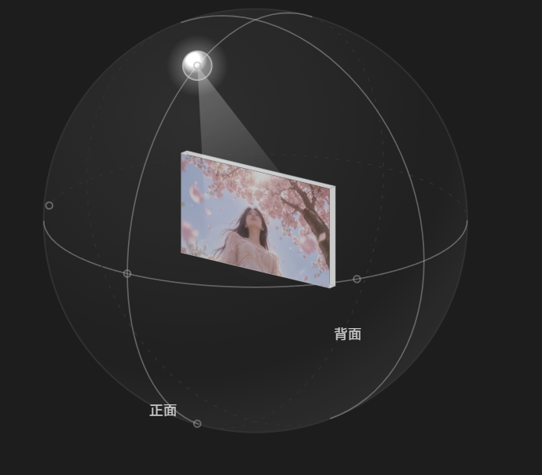
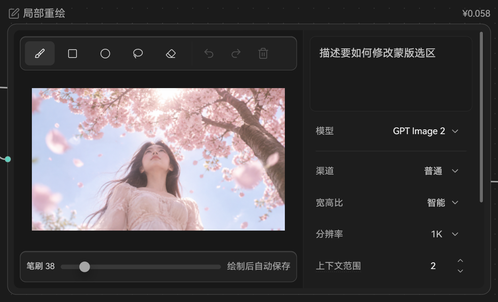
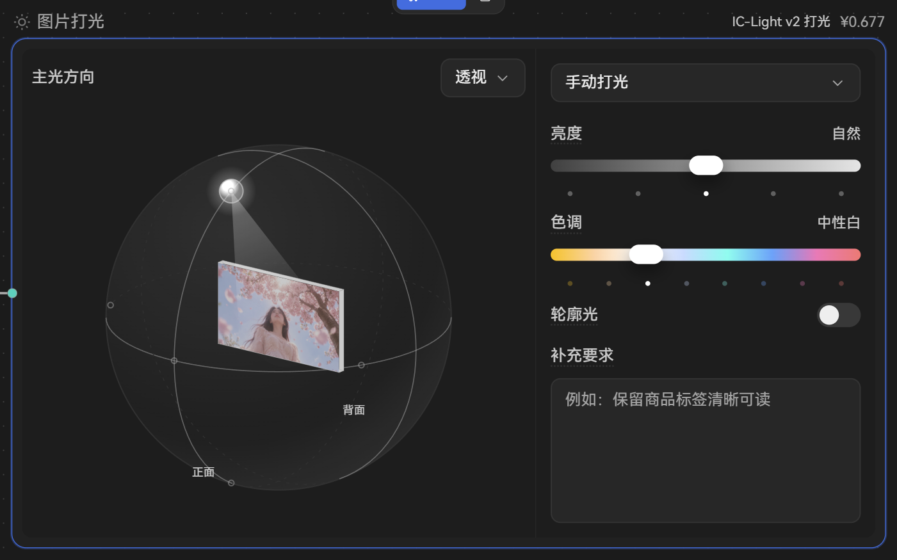

<!doctype html>
<html lang="zh-CN">
<head>
<meta charset="utf-8">
<title>画布特殊节点草稿</title>
<style>
@font-face { font-family: 'HarmonyOS Sans SC UI'; src: url('../../../../src/assets/fonts/HarmonyOS_Sans_SC.ttf') format('truetype'); font-weight: 100 900; font-display: block; }
:root {
  /* 数值取自 src/index.css 的石墨主题令牌 */
  --gap:#181818; --window:#1B1B1B; --panel:#212121; --raised:#272727; --overlay:#292929; --line-overlay:#393939;
  --control:#2B2B2B; --hover:#2A2A2A; --selected:#333333; --line:#282828; --line-strong:#313131; --media:#191919;
  --text1:#EEEEEE; --text2:#CACACA; --text3:#A5A5A5; --icon-rest:#737373;
  --accent:#3A6FDF; --on-accent:#FFFFFF; --media-scrim: rgba(0,0,0,.55); --idle-border: rgba(165,165,165,.3);
}
* { box-sizing: border-box; margin: 0; }
body { background: var(--gap); color: var(--text1); font: 13px/1.4 'HarmonyOS Sans SC UI', sans-serif; padding: 24px; }
.block { width: 1240px; margin-bottom: 40px; }
.label { color: var(--text1); font-size: 14px; font-weight: 580; margin: 0 0 4px; }
.note { color: var(--text3); font-size: 12px; margin: 0 0 12px; line-height: 1.7; }
.pair { display: flex; gap: 20px; align-items: flex-start; }
.cap { color: var(--text2); font-size: 12px; margin-bottom: 6px; }
.canvas { padding: 28px; border-radius: 8px; background-color: var(--window); background-image: radial-gradient(#2c2c2c 1px, transparent 1px); background-size: 16px 16px; }
.before img { display: block; width: 600px; border-radius: 6px; }
svg { width: 16px; height: 16px; fill: none; stroke: currentColor; stroke-width: 2; stroke-linecap: round; stroke-linejoin: round; flex: none; }
.ntitle { display: flex; align-items: center; justify-content: space-between; color: var(--text3); font-size: 12px; margin-bottom: 6px; }
.ntitle span { display: flex; align-items: center; gap: 6px; }
.ntitle svg { width: 14px; height: 14px; }
.node { background: var(--panel); border: 1px solid var(--accent); border-radius: 12px; display: flex; overflow: hidden; }
.left { flex: 1.35; display: flex; flex-direction: column; min-width: 0; background: #1D1D1D; position: relative; }
.right { flex: 1; padding: 8px; display: flex; flex-direction: column; gap: 2px; min-width: 0; }
.toolrow { height: 40px; display: flex; align-items: center; gap: 2px; padding: 0 6px; }
.ib { width: 28px; height: 28px; border-radius: 6px; display: inline-flex; align-items: center; justify-content: center; color: var(--text2); }
.ib.on { background: var(--selected); color: var(--text1); }
.ib.dis { color: #4e4e4e; }
.vsep { width: 1px; height: 16px; background: var(--line-strong); margin: 0 4px; }
.stage { position: relative; flex: 1; overflow: hidden; display: flex; align-items: center; justify-content: center; }
.stage .pic { width: 86%; aspect-ratio: 16/9; background: url('素材/樱花-人像.jpg') center / cover; }
.stage .pic.zoomed { width: 150%; transform: translate(-8%, 6%); }
.mask { position: absolute; left: 40%; top: 36%; width: 22%; height: 30%; border-radius: 40%; background: rgba(58,111,223,.35); outline: 1.5px dashed rgba(255,255,255,.7); }
.zoom { position: absolute; left: 8px; bottom: 8px; height: 22px; padding: 0 6px; border-radius: 6px; background: var(--media-scrim); color: #fff; font-size: 11px; display: flex; align-items: center; gap: 4px; font-variant-numeric: tabular-nums; }
.zoom svg { width: 12px; height: 12px; }
.brushrow { height: 40px; display: flex; align-items: center; gap: 10px; padding: 0 12px; }
.k { color: var(--text3); font-size: 12px; white-space: nowrap; }
.v { color: var(--text2); font-size: 12px; font-variant-numeric: tabular-nums; }
.slider { flex: 1; height: 4px; border-radius: 2px; background: var(--control); position: relative; }
.slider i { position: absolute; left: 22%; top: -5px; width: 14px; height: 14px; border-radius: 50%; background: var(--text3); }
.slider.mini { flex: 0 0 76px; margin: 0 4px 0 6px; }
.prompt { height: 92px; border-radius: 8px; background: var(--window); border: 1px solid var(--line); padding: 8px 10px; color: var(--text3); font-size: 13px; margin-bottom: 6px; }
.row { height: 36px; display: flex; align-items: center; padding: 0 6px; gap: 10px; }
.row .val { margin-left: auto; display: flex; align-items: center; gap: 4px; color: var(--text2); font-size: 13px; }
.row .val b { color: var(--text1); font-weight: 460; }
.chev { width: 14px; height: 14px; color: var(--text3); }
.hr { height: 1px; background: var(--line); margin: 4px 6px; }
.tip { position: absolute; left: 8px; bottom: 36px; background: var(--overlay); border: 1px solid var(--line-overlay); border-radius: 8px; padding: 4px 8px; font-size: 12px; color: var(--text1); white-space: nowrap; }
/* 打光 */
.seg { display: flex; background: var(--gap); border-radius: 8px; padding: 2px; gap: 2px; margin: 0 6px 6px; }
.seg span { flex: 1; height: 28px; display: flex; align-items: center; justify-content: center; border-radius: 6px; color: var(--text2); font-size: 13px; }
.seg span.on { background: var(--selected); color: var(--text1); }
.sect { display: flex; align-items: center; height: 36px; padding: 0 6px; }
.sect .t { color: var(--text1); font-size: 13px; font-weight: 460; }
.sect .val { margin-left: auto; display: flex; align-items: center; gap: 4px; color: var(--text2); font-size: 13px; }
.sphere { flex: 1; position: relative; display: flex; align-items: center; justify-content: center; overflow: hidden; }
.sphere img { width: 92%; display: block; }
.ball { width: 230px; height: 230px; border-radius: 50%; border: 1px solid #3a3a3a; background: radial-gradient(circle at 40% 35%, #2a2a2a, #1b1b1b 70%); position: relative; }
.ball .card { position: absolute; left: 34%; top: 36%; width: 34%; height: 22%; background: url('素材/樱花-人像.jpg') center / cover; transform: perspective(300px) rotateY(-24deg); }
.ball .lamp { position: absolute; left: 30%; top: 12%; width: 16px; height: 16px; border-radius: 50%; background: radial-gradient(#fff, #bbb); box-shadow: 0 0 14px rgba(255,255,255,.6); }
.ball .lbl { position: absolute; font-size: 11px; color: var(--text3); }
.range { margin: 0 6px; height: 6px; border-radius: 3px; background: linear-gradient(90deg,#444,#ddd); position: relative; }
.range.hue { background: linear-gradient(90deg,#f5c34a,#fff,#9fe,#6af,#e6a); }
.range i { position: absolute; top: -5px; width: 22px; height: 16px; border-radius: 8px; background: #fff; }
.sw { width: 34px; height: 20px; border-radius: 10px; background: #3a3a3a; position: relative; margin-left: auto; }
.sw i { position: absolute; left: 3px; top: 3px; width: 14px; height: 14px; border-radius: 50%; background: #ddd; }
.ta { margin: 4px 6px 0; height: 70px; border-radius: 8px; background: var(--window); border: 1px solid var(--line); padding: 8px 10px; color: var(--text3); font-size: 12px; }
table { border-collapse: collapse; width: 100%; font-size: 12px; }
th, td { text-align: left; padding: 8px 10px; border-bottom: 1px solid var(--line); vertical-align: top; line-height: 1.6; }
th { color: var(--text2); font-weight: 460; background: var(--panel); }
td { color: var(--text2); }
td b { color: var(--text1); font-weight: 460; }
.menu { position: absolute; right: 6px; top: 34px; background: var(--overlay); border: 1px solid var(--line-overlay); border-radius: 12px; padding: 4px; width: 120px; z-index: 3; }
.menu div { height: 30px; display: flex; align-items: center; padding: 0 10px; border-radius: 6px; font-size: 13px; }
.menu div.cur { background: var(--selected); }
</style>
</head>
<body>
<script>
const ICONS = /*ICONS_START*/{"chevron-down":"<path d=\"m6 9 6 6 6-6\"/>","square-pen":"<path d=\"M12 3H5a2 2 0 0 0-2 2v14a2 2 0 0 0 2 2h14a2 2 0 0 0 2-2v-7\"/><path d=\"M18.375 2.625a1 1 0 0 1 3 3l-9.013 9.014a2 2 0 0 1-.853.505l-2.873.84a.5.5 0 0 1-.62-.62l.84-2.873a2 2 0 0 1 .506-.852z\"/>","brush":"<path d=\"m11 10 3 3\"/><path d=\"M6.5 21A3.5 3.5 0 1 0 3 17.5a2.62 2.62 0 0 1-.708 1.792A1 1 0 0 0 3 21z\"/><path d=\"M9.969 17.031 21.378 5.624a1 1 0 0 0-3.002-3.002L6.967 14.031\"/>","square":"<rect width=\"18\" height=\"18\" x=\"3\" y=\"3\" rx=\"2\"/>","circle":"<circle cx=\"12\" cy=\"12\" r=\"10\"/>","lasso":"<path d=\"M3.704 14.467A10 8 0 0 1 2 10a10 8 0 0 1 20 0 10 8 0 0 1-10 8 10 8 0 0 1-5.181-1.158\"/><path d=\"M7 22a5 5 0 0 1-2-3.994\"/><circle cx=\"5\" cy=\"16\" r=\"2\"/>","eraser":"<path d=\"M21 21H8a2 2 0 0 1-1.42-.587l-3.994-3.999a2 2 0 0 1 0-2.828l10-10a2 2 0 0 1 2.829 0l5.999 6a2 2 0 0 1 0 2.828L12.834 21\"/><path d=\"m5.082 11.09 8.828 8.828\"/>","undo-2":"<path d=\"M9 14 4 9l5-5\"/><path d=\"M4 9h10.5a5.5 5.5 0 0 1 5.5 5.5a5.5 5.5 0 0 1-5.5 5.5H11\"/>","redo-2":"<path d=\"m15 14 5-5-5-5\"/><path d=\"M20 9H9.5A5.5 5.5 0 0 0 4 14.5A5.5 5.5 0 0 0 9.5 20H13\"/>","trash-2":"<path d=\"M10 11v6\"/><path d=\"M14 11v6\"/><path d=\"M19 6v14a2 2 0 0 1-2 2H7a2 2 0 0 1-2-2V6\"/><path d=\"M3 6h18\"/><path d=\"M8 6V4a2 2 0 0 1 2-2h4a2 2 0 0 1 2 2v2\"/>","sun":"<circle cx=\"12\" cy=\"12\" r=\"4\"/><path d=\"M12 2v2\"/><path d=\"M12 20v2\"/><path d=\"m4.93 4.93 1.41 1.41\"/><path d=\"m17.66 17.66 1.41 1.41\"/><path d=\"M2 12h2\"/><path d=\"M20 12h2\"/><path d=\"m6.34 17.66-1.41 1.41\"/><path d=\"m19.07 4.93-1.41 1.41\"/>"}/*ICONS_END*/;
const i = (n, c = '') => `<svg viewBox="0 0 24 24" class="${c}">${ICONS[n] || ''}</svg>`;
const chev = i('chevron-down', 'chev');
const redrawAfter = (zoomed) => `<div class="ntitle"><span>${i('square-pen')}局部重绘</span><span>¥0.058</span></div>
<div class="node" style="width:600px;height:360px">
  <div class="left">
    <div class="toolrow"><span class="ib on">${i('brush')}</span><span class="ib">${i('square')}</span><span class="ib">${i('circle')}</span><span class="ib">${i('lasso')}</span><span class="ib">${i('eraser')}</span><span class="vsep"></span><span class="slider mini"><i></i></span><span class="v" style="width:22px">38</span><span style="margin-left:auto"></span><span class="ib dis">${i('undo-2')}</span><span class="ib dis">${i('redo-2')}</span><span class="ib dis">${i('trash-2')}</span></div>
    <div class="stage"><div class="pic ${zoomed ? 'zoomed' : ''}"></div><div class="mask"></div><span class="zoom">${zoomed ? '180%' : '适合'}</span>${zoomed ? '<span class="tip">滚轮缩放 · 空格或中键拖动平移 · 双击回到适合</span>' : ''}</div>
  </div>
  <div class="right">
    <div class="prompt">描述要如何修改蒙版选区</div>
    <div class="row"><span class="k">模型</span><span class="val"><b>GPT Image 2</b>${chev}</span></div>
    <div class="hr"></div>
    <div class="row"><span class="k">渠道</span><span class="val">普通${chev}</span></div>
    <div class="row"><span class="k">宽高比</span><span class="val">智能${chev}</span></div>
    <div class="row"><span class="k">分辨率</span><span class="val">1K${chev}</span></div>
  </div>
</div>`;
const relightAfter = (menu) => `<div class="ntitle"><span>${i('sun')}图片打光</span><span>IC-Light v2 打光 · ¥0.677</span></div>
<div class="node" style="width:600px;height:400px">
  <div class="left" style="position:relative">
    <div class="sect"><span class="t">主光方向</span><span class="val">透视${chev}</span></div>
    ${menu ? '<div class="menu"><div class="cur">透视</div><div>正面</div></div>' : ''}
    <div class="sphere"></div>
  </div>
  <div class="right" style="gap:4px">
    <div class="seg"><span class="on">手动打光</span><span>智能打光</span></div>
    <div class="row"><span class="k">亮度</span><span class="val">自然</span></div>
    <div class="range"><i style="left:46%"></i></div>
    <div class="row" style="margin-top:6px"><span class="k">色调</span><span class="val">中性白</span></div>
    <div class="range hue"><i style="left:26%"></i></div>
    <div class="row" style="margin-top:6px"><span class="k">轮廓光</span><span class="sw"><i></i></span></div>
    <div class="row"><span class="k">补充要求</span></div>
    <div class="ta">例如：保留商品标签清晰可读</div>
  </div>
</div>`;
const rules = `<table>
<tr><th style="width:150px">规则</th><th>做法</th><th style="width:420px">影响到的节点（检查出的条数）</th></tr>
<tr><td><b>① 节点里不再套框</b></td><td>整个节点只分两块：左边“画面区”是一整块深一点的底，铺满到节点边缘（不再往里缩一圈、不再在里面另放一块更深的画面框），工具行、画面、笔刷行、视角切换都直接放在这块底上，各自不带框；右边是参数区。左右两块靠底色区分，不再加分隔线。输入框（提示词、补充要求）保留输入框的框，那是告诉人“这里能打字”。</td><td>局部重绘、扩图、打光、多角度、素材组标题条与计数条、分镜拆分外框、3D 镜头素材行外层（约 22 处）</td></tr>
<tr><td><b>② 不要常驻说明</b></td><td>“绘制后自动保存 / 已自动保存”去掉，只在保存失败时显示一行错误；“拖动环视 · 滚轮缩放 · 双击放大”这类操作说明收进缩放读数的悬停提示；“3×3 · 9 格”“N 格”这种看画面就知道的计数去掉；画布左上角“已保存”已改完（只在失败、冲突、草稿未存时出现）。</td><td>局部重绘、全景、分镜生成、分镜拆分、素材组、图层结果（约 16 处）</td></tr>
<tr><td><b>③ 节点里的取值控件一律静默</b></td><td>整个节点放在“工具条排布”下，下拉都是“文字 + 箭头”、悬停才出底，不再有字段框。像打光的“透视 / 正面”这种画面视角切换，放在分区标题行的右端，做成静默下拉。真正的模式切换（手动 / 智能、球面 / 平面）统一用分段控件，不再一处分段、一处按钮网格、一处胶囊按钮。</td><td>打光“透视/正面”与“预设”、全景球面/平面、多角度的选项网格（4 处 + 3 种写法合一）</td></tr>
<tr><td><b>④ 需要精细操作的画面可以缩放平移</b></td><td>滚轮以指针为中心缩放，按住空格或中键拖动平移，双击回到“适合”；左下角一个小读数（适合 / 180%），悬停给操作说明。缩放算法从图片编辑器里抽成公共模块，图片编辑器和这些节点共用一份，不另写。普通图片、视频节点上的滚轮仍然是缩放整个画布，不抢。扩图节点现在滚轮是“缩放原图在扩展框里的大小”，改成拖原图四角的控制点，滚轮让给视图缩放。</td><td>局部重绘（蒙版画布）、扩图、全景平面查看；多角度的滚轮本来就是推拉镜头，保持不变</td></tr>
<tr><td><b>⑤ 同类写法统一</b></td><td>参数名一律第三档 12px；分区标题（如“主光方向”）最亮 13px；分隔线只用一种细线；节点里的动作按钮静默，唯一主动作在节点工具条上（生成）；外壳内边距统一 8px，圆角统一；分镜拆分的“合并导出”补进多语言文案。</td><td>约 15 组：标签四种字号颜色、四种分隔线、按钮四种档位、圆角与内边距各几种</td></tr>
<tr><td><b>⑥ 素材行一律“参考素材”</b></td><td>分镜生成里的“图片”、打光与多角度里的“源图”都改成“参考素材”。</td><td>分镜生成、打光、多角度（3 处）</td></tr>
</table>`;
const blocks = [
  { id: 1, label: '① 局部重绘：左栏整块一个底，笔刷大小进工具行，画面直接放在底上',
    note: '左：现状。右：草稿。整个节点只分左右两块：左边一整块深一点的底（和现在打光左栏同一个颜色，铺满到节点边缘，不再往里缩一圈），工具行和画面直接放在这块底上，各自不带框；右边是参数区。笔刷大小是画笔与橡皮擦的属性，挪进工具行（工具后面一个短滑杆加数值），只在选中画笔或橡皮擦时出现，矩形、圆形、套索不显示；节点拉窄放不下时滑杆收成“38 ⌄”，点开再拖。底部那一行整个去掉，画面多出一截高度。画面滚轮缩放、空格或中键拖动平移，左下角小读数“适合 / 180%”。“绘制后自动保存”去掉，只在保存失败时显示一行错误。',
    html: `<div class="pair"><div class="canvas before"><div class="cap">现状</div></div><div class="canvas"><div class="cap">草稿 · 静息</div>${redrawAfter(false)}</div></div>` },
  { id: 2, label: '① 局部重绘 · 放大后：读数变成百分比，悬停读数才给操作说明',
    note: '放大到 180% 看蒙版边缘，画面超出部分被裁在画面区里，不会盖到工具行。',
    html: `<div class="pair"><div class="canvas"><div class="cap">草稿 · 放大并悬停读数</div>${redrawAfter(true)}</div></div>` },
  { id: 3, label: '② 打光：球保持原样，左栏同样是整块一个底，“透视”不再带框',
    note: '左：现状。右：草稿。球体完全不变（立体的球、灯和画面都照原来画）。左栏这块底铺满到节点边缘，“主光方向”和右端的“透视 ⌄”直接放在底上；“透视”去掉字段框，静默、悬停才出底，点开是“透视 / 正面”两项。右栏的手动 / 智能改成分段控件（这是模式切换）；亮度、色调、轮廓光、补充要求这些参数名和其他节点的参数行一个样；滑杆下面的刻度点照原样保留（草稿里省略了）。',
    html: `<div class="pair"><div class="canvas before"><div class="cap">现状</div></div><div class="canvas"><div class="cap">草稿</div>${relightAfter(false)}</div></div>` },
  { id: 4, label: '③ 打光 · 点开“透视”',
    note: '列表型浮层；触发器在这一行的最右端，按刚定的浮层对齐规则右边对齐，不往节点外伸。',
    html: `<div class="pair"><div class="canvas"><div class="cap">草稿 · 视角菜单</div>${relightAfter(true)}</div></div>` },
  { id: 5, label: '全部节点的统一规则与影响范围', note: '按检查结果归成六条，实现时按规则一类一类改，改完每个节点截图核对。', html: rules },
];
document.body.innerHTML = blocks.map((b) => `<div class="block" data-id="${b.id}"><p class="label">${b.label}</p><p class="note">${b.note}</p>${b.html}</div>`).join('');
</script>
</body>
</html>
